Programação de Jogos com o Construct - Parte Teórica
Programação de Jogos com o Construct - Parte TeóricaIntroduçãoO que é programação?O que é programação de jogos?O que é o Construct3?Tipos de ObjetosVisual x LógicoTipos de Objeto (Object Type)Tipos de Objeto e InstânciasVariáveisO que é uma variável?Variável de instânciaVariáveis GlobaisAcessando variáveis e executando funçõesBlocos de eventosO que é um evento?Tipos de eventosJuntando eventosEvento do tipo AND / EEvento do tipo OR / OUInvertElse (Senão)Subeventos
Introdução
O que é programação?
Programação é o uso de uma linguagem que o computador possa compreender de forma a resolver problemas.
Um programa é uma série de passos ou instruções que devem ser executados pelo computador.
O que pode ser feito com programação?
- Criar jogos
- Criar programas para sistemas operacionais
- Criar sistemas operacionais
- Criar programas para fazer suas tarefas no dia-a-dia para facilitar seu trabalho
- Consertar problemas em sistemas operacionais/programas
- Invadir redes, sistemas, sites e computadores pessoais (hackear)
- Adicionar funcionalidades que você desejar em sistemas operacionais/programas
- Muitas outras coisas
https://www.programacaoprogressiva.net/2012/08/serie-comece-programar-2-o-que-e.html
O que é programação de jogos?
A programação de jogos é uma sub-área da programação que lida com a criação de jogos eletrônicos. Para fazer um jogo você precisa pensar em coisas como:
- Uma ideia inicial: "meu jogo é um jogo de..."
- Uma história: "No meu jogo vai acontecer isso, depois isso e então aquilo..."
- Uma linguagem de programação: usando uma linguagem de programação você pode dizer ao computador qual operação você quer que ele faça, mas assim como você pode dizer a mesma coisa em diferentes línguas, só que de forma diferente, na programação acontece o mesmo, você pode dizer quais passos o computador deve seguir usando as regras de uma linguagem de programação.
- Imagens, sons e músicas: como jogos são visuais, você precisará procurar, comprar ou fazer a parte audiovisual que irá utilizar
O que é o Construct3?
- O Construct 3 é uma ferramenta para a criação de jogos 2D voltada para pessoas que não conhecem programação
- A versão 3 do Construct é baseada na plataforma web, ou seja, nada precisa ser baixado ou instalado no computador, o acesso pode ser feito por um browser atualizado como Google Chome, Mozila Firefox, Opera, Safari etc.;
- Foi desenvolvido pela empresa Scirra Ltda e foi lançado em 2007;
- No Construct entender a lógica de como um jogo funciona é mais importante do que saber alguma linguagem de programação já que o código do jogo é feito de forma visual por meio de blocos;
Tipos de Objetos
Visual x Lógico
No Construct, a construção do jogo é dividida em duas partes
Uma parte visual e uma parte lógica
Essas partes podem ser acessadas por essas duas abas:
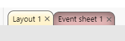
Chamamos a parte visual de Layout e a parte lógica de Event sheet
Tipos de Objeto (Object Type)


Todo jogo é feito pela manipulação de instâncias e tipos de objeto
Todo tipo de objeto é algo do jogo que tem:
- Comportamentos já definidos
- Comportamentos que pode vir a ter
- Efeitos que podem ser aplicados
- Informações que podem ser manipuladas
- Coisas que podem ser testadas
Exemplos:
Um objeto do tipo Sprite:
- Tem o comportamento padrão de poder receber animações, podemos manipular qual animação deve ser tocada, por exemplo
- Podemos aumentar esse comportamento adicionando coisas como: ser um personagem, ser afetado pela física, com esses comportamentos podemos dizer a velocidade com que o objeto pode se mover
- Podemos testar se esse objeto está se movendo ou se está parado
Um objeto do tipo Text:
- pode receber por padrão um texto a ser mostrado,
- podemos adicionar um efeito como Glass fazendo o objeto ter o efeito de se parecer com vidro
- podemos manipular informações como a cor do texto
Alguns tipos de objeto são usados para funções específicas do jogo, nesse caso eles não tem uma representação visual. Usamos eles apenas para executar ações ou testar coisas
São tipos de objeto como:
- Audio: ele representa os sons do jogo. Podemos dizer qual som tocar e testar se um certo som está tocando
- Keyboard: ele representa o teclado do computador. Podemos apenas testar se uma certa tecla está sendo apertada

Tipos de Objeto e Instâncias
Um tipo de objeto é como se fosse um molde ou base.
Eles ficam listados em Project > Object Types:

Considere que no seu jogo o player vai poder coletar moedas:
Imagine que você precisa colocar 100 moedas no jogo: todas elas valem a mesma quantidade de pontos, tem a mesma imagem e se comportam da mesma forma
Se todas elas são exatamente iguais, faz sentido criar um tipo de objeto para cada moeda, definir a mesma imagem, os mesmos valores e o mesmo comportamento?
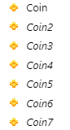
A resposta é: não
Para isso você precisa entender a diferença entre um tipo de objeto e suas instâncias
Um tipo de objeto é uma base para criar objetos, enquanto uma instância é o resultado do uso da base
Você pode pensar no tipo de objeto como a planta de uma casa você define coisas fixas com ela, quantas são as paredes, portas, etc.
Essa planta pode ser utilizada para construir várias casas, elas são bem parecidas, mas podem ter coisas diferentes como a cor e o número da casa, mas não o lugar onde fica uma das paredes.
Um tipo de objeto diz quais coisas uma instância pode ter, uma instância é a realização dessa base, da planta da casa.
Uma planta diferente diz respeito a um conjunto de casas diferentes
Se você pensar que a planta de uma casa é um tipo de objeto, as casas que você pode fazer a partir dessa planta são as instâncias
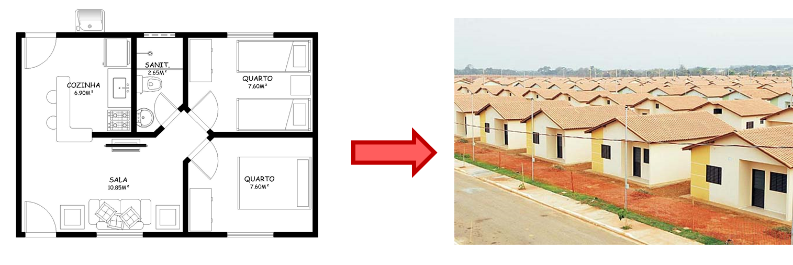
Se você pensar que o projeto (desenho) de uma caneta é um tipo de objeto, quando alguém usa esse desenho para fazer uma caneta de verdade, está criando uma instância

Uma caneta de verdade poderia, por exemplo, ter diferentes cores. Mudamos a propriedade, mas não o plano que define como uma caneta geral é.
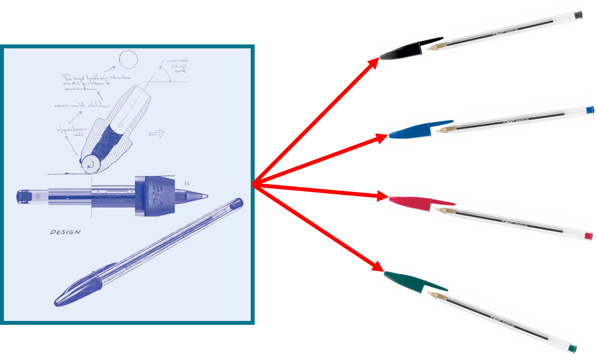
O tipo de objeto define coisas fixas como:
- Material da caneta
- Quantidade de tinta numa caneta nova
- Tamanho da caneta
A caneta tem propriedades que podem mudar de acordo com a caneta:
- Cor da tampa
- Cor da tinta
- Cor da ponta
O tipo de objeto pode preencher esses lugares com valores padrão
- Cor da tampa: azul
- Cor da tinta: azul escuro
- Cor da ponta: azul
Uma instância pode trocar esses valores que podem mudar. Se você não disser um novo valor, o valor padrão será mantido:
Uma instância com as propriedades:
- Cor da tampa: vermelha
- Cor da tinta: vermelho claro
Será:
- Cor da tampa: vermelha
- Cor da tinta: vermelho claro
- Cor da ponta: azul
Como não dissemos qual a cor da tampa, o valor padrão foi colocado.
Do mesmo jeito, no seu jogo, para colocar as moedas você só precisa criar uma moeda que servirá de base para todas as outras esse será o tipo de objeto, as moedas criadas a partir desse "molde" serão as instâncias

O tipo de objeto diz quais são os valores que uma moeda pode ter e coloca alguns valores padrão, quando criamos uma instância podemos:
- Alterar alguns valores
- Completar campos que estavam vazios
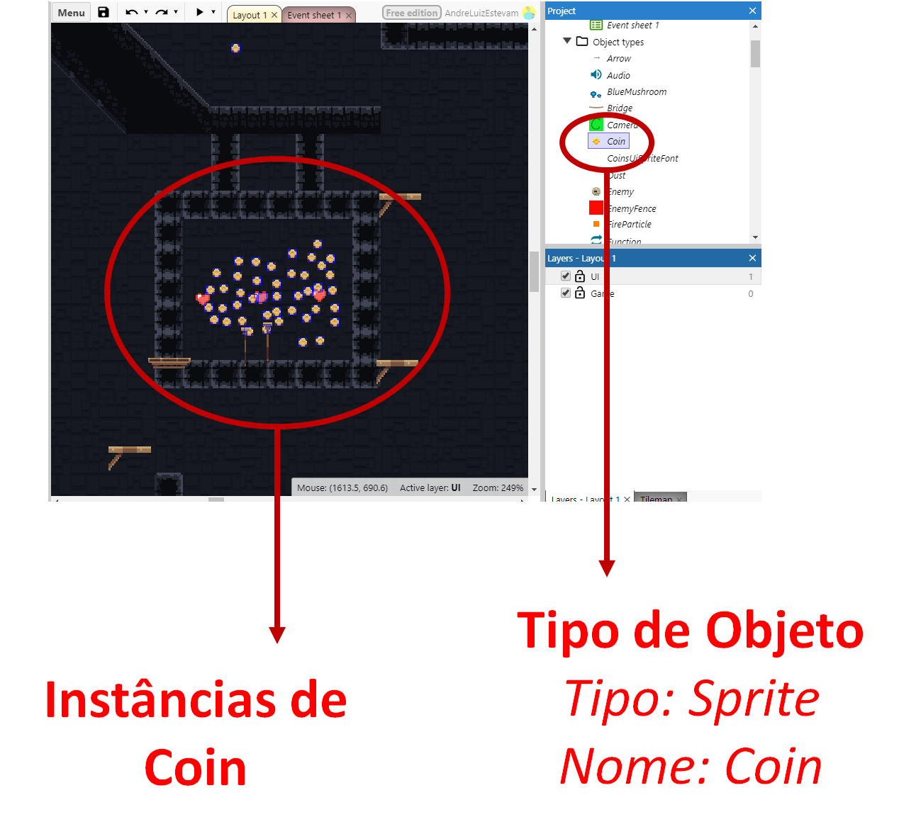
Variáveis
O que é uma variável?
Uma variável é um campo no nosso jogo que guarda um valor que pode mudar ao longo do jogo.
Pode ser um número, um texto ou valor booleano (verdadeiro/falso)

Por exemplo, no jogador, a velocidade máxima é guardada numa variável chamada Max Speed, você pode mudar o valor inicial nas propriedades ou mudar usando a programação (quando ele pegar um certo item poderá andar mais rápido por exemplo)
Variável de instância
Você viu como existe uma diferença entre um tipo de objeto e uma instância isso pode ficar mais claro com o entendimento do que é uma variável de instância.
No exemplo das moedas, você viu que elas tinham um atributo vale pontos, que indica quantos pontos uma moeda vai dar ao jogador.

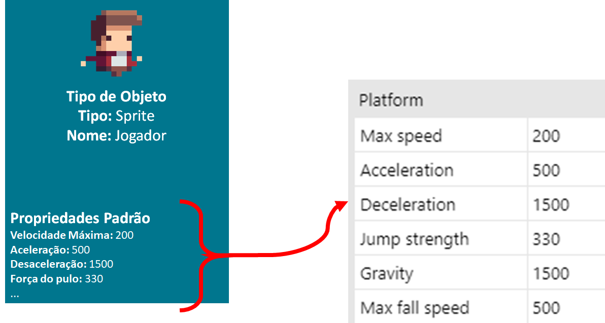
Frequentemente precisamos criar esses "espaços" para guardar os valores que nós queremos, essas são as variáveis de instância
Por exemplo, para o jogador queremos guardar:
- Quantas vidas ele tem
- Quantas moedas ele pegou
Precisamos criar variáveis de instância pois esses valores não existem ainda: eles não vêm com o Tipo de Objeto Sprite ou com o Comportamento Plataforma
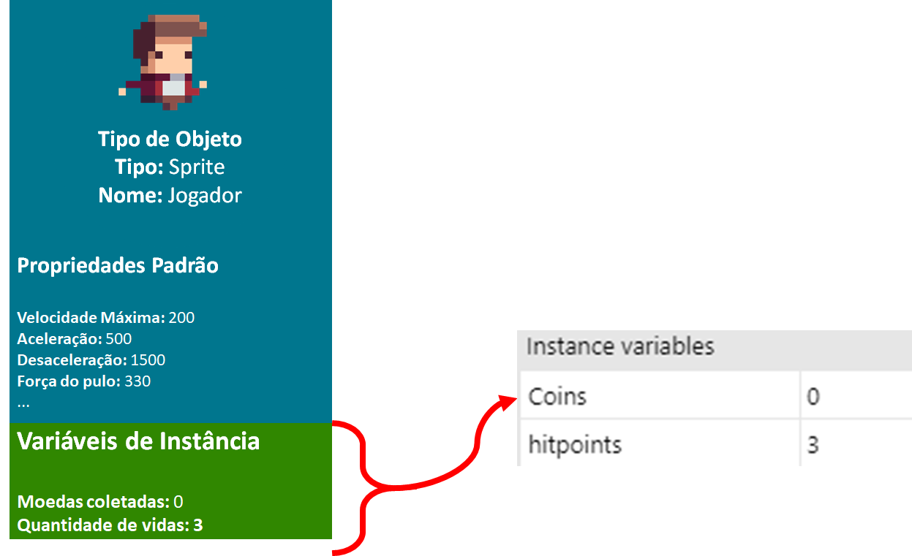
Vale lembrar que esses valores estão associados a instância jogador, por isso são variáveis de instância
No caso do inimigo, que tem a variável de instância Hitpoints (vidas). Cada instância de inimigo pode ter um número diferente de vidas, se removermos um deles o número na quantidade de vidas também será removido.

Quando eu quiser consultar o valor Vidas terei que dizer de qual inimigo estou falando
Variáveis Globais
Variáveis globais funcionam da mesma forma como as variáveis de instância, mas elas não estão relacionadas com objetos do jogo. Elas existem enquanto o jogo estiver aberto.

Acessando variáveis e executando funções


Algumas vezes precisamos usar fórmulas para fazer certas atividades no nosso jogo. Lembre-se de que:
Tudo que for escrito e não estiver entre aspas:
" ... "será interpretado como um comandoPara acessar valores dentro de instâncias use:
NomeObjeto.NomeVariávelNúmeros com vírgula como: , devem ser representados com o ponto
0.35Para juntar textos e números coloque um
&entre eles:"bom dia para " & 0 & " pessoas"irá resultar em:bom dia para 0 pessoasSe você escrever o nome de uma variável, ele será trocado pelo valor:
"Você tem " & Player.moedas & " moedas". Se o jogador tiver 20 moedas esse valor será trocado emPlayer.moedasresultando em:Você tem 20 moedasQuando fazemos algo do tipo
umNome(valor1, valor2, ...)estamos usando uma função, o construct vai usar os valores que você deu para realizar um cálculo (dependendo do nome da função) e essa parte será trocada pelo resultado desse cálculo- Se você fizer
maior(2, 3)isso será trocado por3, já que o construct irá calcular que 3 é maior que 2 e irá trocarmaior(2, 3)por esse resultado
- Se você fizer
Blocos de eventos
O que é um evento?
Um evento é uma condição ligada a um ou mais objetos do jogo, por exemplo: no game, o teclado será representado por um objeto do tipo Keyboard, pois são os objetos que podem lançar eventos, assim, podemos no código monitorar por algum evento específico, nesse caso, pode ser quando alguma tecla for pressionada ou solta, então podemos executar alguma ação quando esse evento ocorrer.

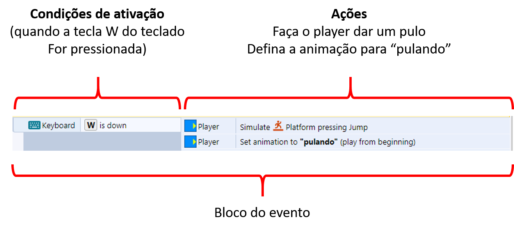
Lembre-se:
- Um evento é qualquer acontecimento dentro do jogo
- Posso criar um código que é ativado quando um evento ocorrer
- Posso decidir quais ações devem acontecer quando esse evento for acionado
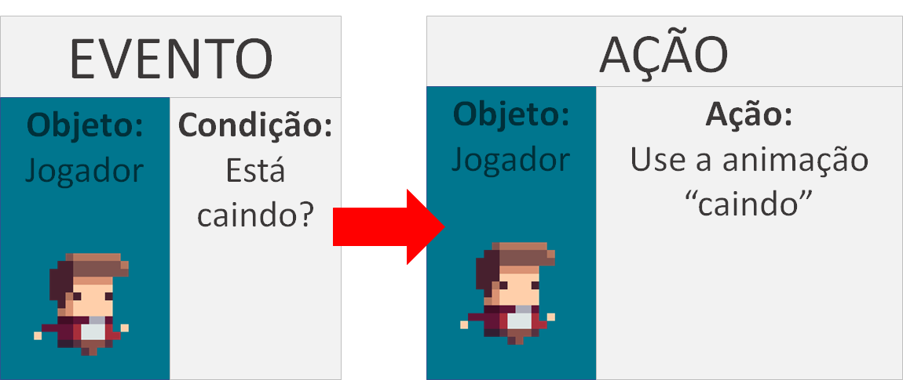
Tipos de eventos
Existem dois tipos de eventos
Eventos que não começam com
On- As ações serão executadas enquanto a condição for verdadeira
- Se a ação for fazer o personagem pular, ele irá pular repetidamente até você soltar a tecla
Eventos que começam com
On- As ações são executadas na primeira vez que a ação for verdadeira, ou seja, apenas no instante que o evento ocorrer
- Se a ação for fazer o personagem pular, ele irá pular uma vez e só pulará novamente se você soltar a tecla e apertá-la novamente

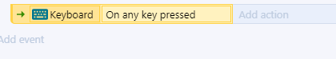
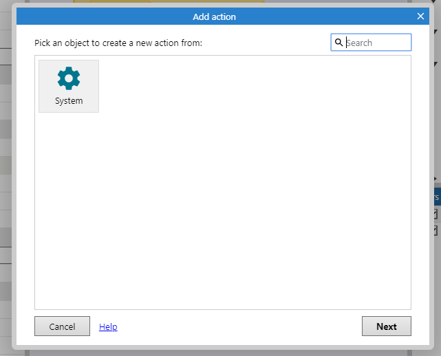

Juntando eventos
Evento do tipo AND / E
Você pode precisar que mais de um evento esteja acontecendo ao mesmo tempo para executar algum bloco. Quando existe mais de uma condição e precisamos que todas sejam verdadeiras, usamos o AND
Inserindo uma nova condição

Outra forma de fazer isso

Um bloco do tipo AND fica dessa forma

Evento do tipo OR / OU
Num evento do tipo OR , o bloco é executado quando uma ou mais condições são verdadeiras.
Para fazer um bloco OR você precisa começar por um do tipo AND e usar a opção Make OR block

Ele ficará assim:

Você pode torná-lo um bloco AND usando a seguinte opção:

Invert
Caso você queira que o bloco seja executado quando uma condição não for verdadeira, use a opção invert

Um bloco com um invert fica assim:

Perceba que na imagem existe uma junção do bloco AND com o invert nesse caso, você pode ler essa condição como:
*"Execute as ações a seguir **se** A tecla W do teclado estiver sendo apertada E o player Não estiver pulando"*

Else (Senão)
Um bloco do tipo else é executado quando o que foi testado em um evento não ocorreu: você pode fazer o teste de algo e o seu inverso em um mesmo bloco.
Um bloco else é criado dessa forma:

O resultado será:

Você pode ler o else como: Execute essa ação se algo acontecer, caso contrário execute outra ação

Subeventos
Subeventos são maneiras de condensar o código e evitar repetição. Imagine que você tem que programar o seguinte:
Se o jogador encostar numa alavanca um som deve ser tocado, se ele apertar a tecla x a alavanca deve mudar de posição
Sem o uso de sub eventos a solução poderia ser assim:
xxxxxxxxxxSE (jogador está encostando na alavanca):toque o somSE (jogador está encostado na alavanca E a tecla x está sendo apertada):mude a posição da alavanca

Veja que uma das condições se repete, podemos condensar isso usando um subevento da seguinte forma:
xxxxxxxxxxSE (jogador está encostando na alavanca):toque o somSE (tecla x está sendo apertada):mude a posição da alavanca

Para criar um subevento use: